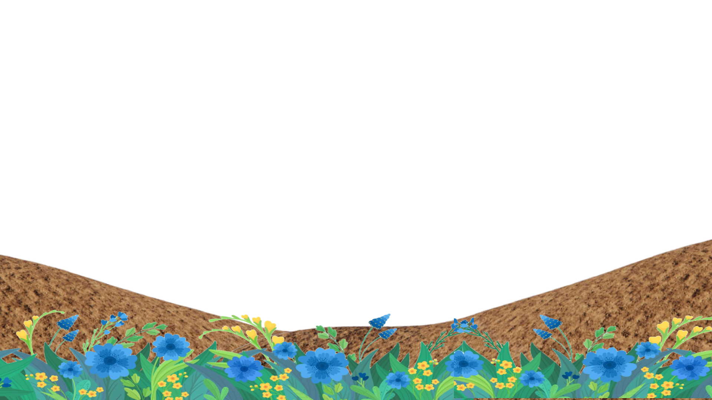
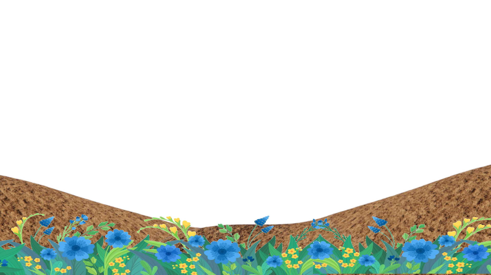
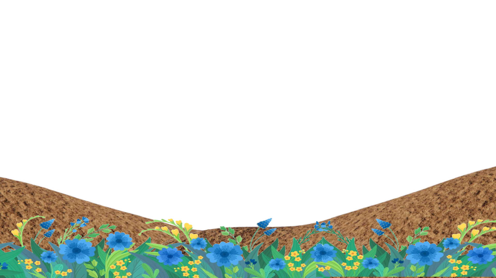
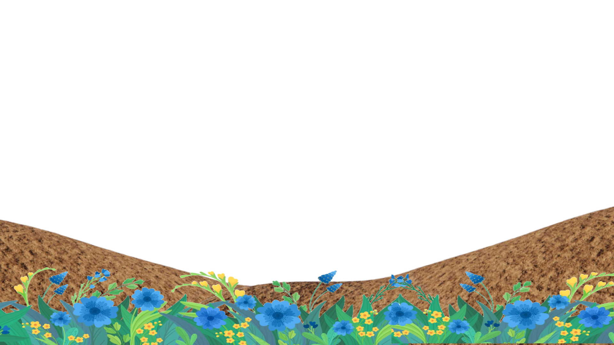

The sun is shining, the sky is clear and the weather is nice. Mary and
her dog, Cocoa, are in the park amidst pretty blue flowers, taking a
stroll. Mary and Cocoa come to the park as part of their daily routine.
They take a nice walk and play together to strengthen their bond even
more. They love playing in the park.
They have come to the park today as well and are enjoying the sunny day.
They stand apart when you are at the top of the page. From there, you
can scroll down to see the parallax scroll animation bring Cocoa and
Mary together to play. As you scroll back up, they go back to their
original positions.